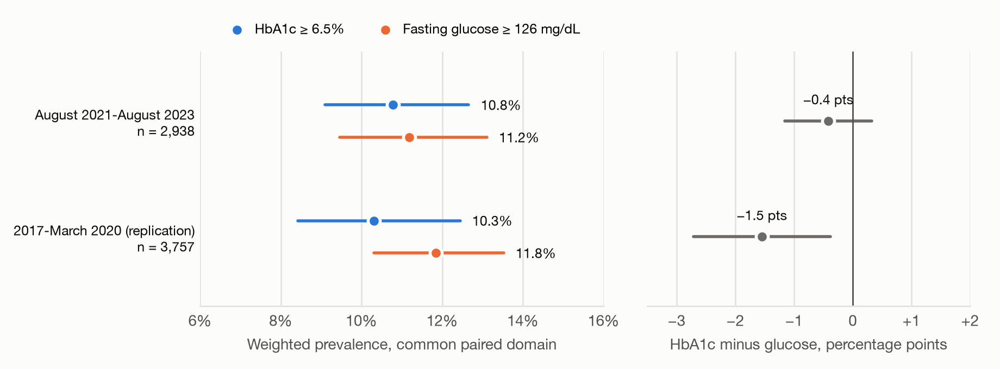
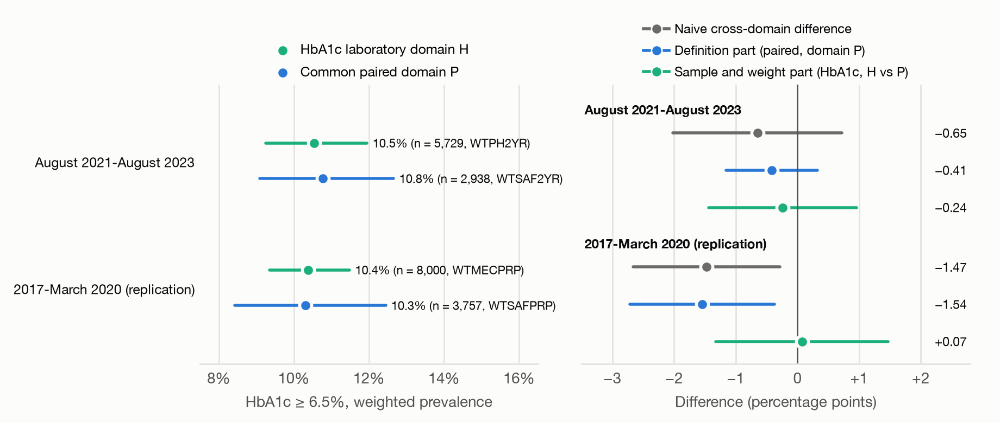
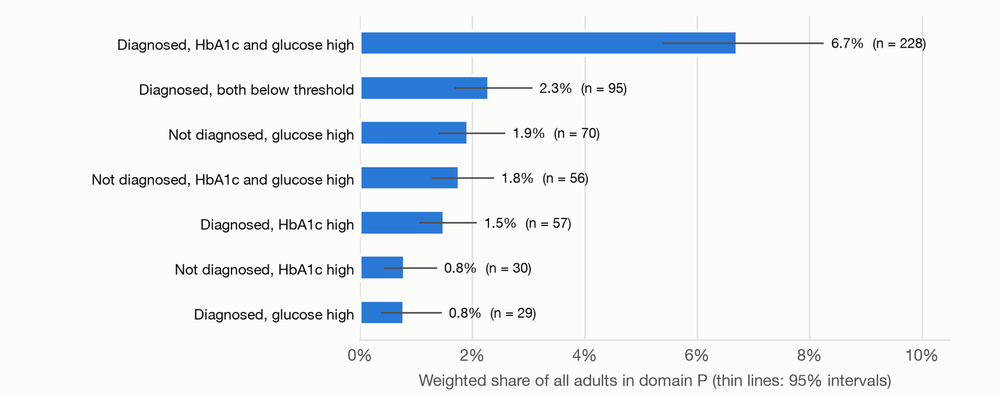

Comparing the two tests in the same adults

Among 2,938 adults with both tests in August 2021 to August 2023, 10.8% (95% CI 9.1 to 12.7) had HbA1c at or above 6.5% and 11.2% (9.5 to 13.1) had fasting glucose at or above 126 mg/dL. The paired difference was −0.41 percentage points (−1.15 to +0.33). In the 2017 to March 2020 release the difference was −1.54 points (−2.71 to −0.37), with glucose higher.
An exploratory analysis, added after the planned analyses, split the overall difference by reported diagnosis. Adults without a reported diagnosis contributed −1.12 points (−1.69 to −0.56) and those with a diagnosis contributed +0.71 points (+0.20 to +1.22). Both contributions use all adults in the paired domain as the denominator. Their opposite signs explain the small overall 2021 to 2023 difference. Moving the HbA1c cut point one reporting unit to 6.4% or 6.6% changed the paired difference to +0.85 or −1.30 points, so its size and sign depend on small calibration differences.
The two estimates come from the same people, so they move together: their sampling correlation was 0.91. Treating them as independent would have made the standard error of the difference 3.4 times too large.
How much the laboratory sample and weight changed the estimate

In the HbA1c laboratory domain (5,729 adults, phlebotomy weight WTPH2YR) the HbA1c estimate was 10.5% (9.2 to 12.0), −0.24 points (−1.44 to +0.96) from the paired-domain value. In 2017 to March 2020 the same comparison gave +0.07 points (−1.32 to +1.47). Both intervals include zero but also allow shifts of up to about 1.5 points, so the data rule out only larger differences and do not show that there is none. This part is a descriptive comparison of two documented estimators, not a causal effect.
| Part | Comparison (domain, weight, unweighted denominator) | Difference |
|---|---|---|
| Naive | HbA1c in domain H (WTPH2YR, n = 5,729) minus glucose in domain P (WTSAF2YR, n = 2,938) | −0.65 (−2.02 to +0.72) |
| Definition | HbA1c minus glucose, both in domain P (WTSAF2YR, n = 2,938) | −0.41 (−1.15 to +0.33) |
| Sample and weight | HbA1c in domain H (WTPH2YR, n = 5,729) minus HbA1c in domain P (WTSAF2YR, n = 2,938) | −0.24 (−1.44 to +0.96) |
Similar totals hide different people
The tests agreed for 95.0% of adults in the paired domain (kappa 0.74, 95% CI 0.70 to 0.79). Of adults above either threshold, 17.0% were above the HbA1c threshold only and 20.1% were above the glucose threshold only. Among adults who reported diagnosed diabetes, 20.3% (16.0 to 25.3) had both values below threshold, as did 16.3% of those reporting insulin or diabetes pills, so a definition built only on biomarkers misses many treated people.

Each laboratory domain has its own sample and weight
The data are the NHANES August 2021 to August 2023 public-use files for demographics, glycohemoglobin, fasting glucose, the fasting questionnaire, diabetes, and reproductive health, downloaded on 7 October 2026 from the links on the official NCHS listing pages and recorded with SHA-256 checksums. Of 11,933 participants, 6,022 were examined adults aged 20 or older who were not pregnant. Most of the adults without fasting glucose were never assigned to the morning fasting subsample.
| Domain | Who is in it | Weight | n |
|---|---|---|---|
| A | Examined, age 20+, not pregnant, diagnosis question answered | WTMEC2YR (description only) | 6,022 |
| H | A with an HbA1c result and a positive phlebotomy weight | WTPH2YR | 5,729 |
| F | A with a valid fasting glucose (8 to less than 24 hour fast) | WTSAF2YR | 2,940 |
| P | F with an HbA1c result (common paired domain) | WTSAF2YR | 2,938 |
Thresholds follow the American Diabetes Association criteria with inclusive boundaries. A single survey measurement is not a confirmed diagnosis, so every result is an estimate under a surveillance definition.
Keeping the definition comparison separate from the sample comparison
Compare definitions only on one denominator
For the primary contrast, both proportions were estimated together on the paired domain, so their covariance enters the standard error of the difference. The checker refuses any request that would label a difference between two domains or two weights as a definition difference.
Linearize estimators with different weights together
HbA1c in its laboratory domain and HbA1c in the paired domain use different weights on overlapping people. Each was written as a ratio of weighted totals, and all four totals were linearized jointly on the full design, so the sample and weight part has a valid interval. The 311 glucose values that NCHS released with a zero weight because the 8 to less than 24 hour fasting criterion was not met were left out rather than reweighted.
The composite reproduces the published NCHS estimates
The surveillance composite was 15.8% (13.6 to 18.2), with diagnosed diabetes 11.3% and undiagnosed biochemical positivity 4.5% (3.3 to 5.9). All 18 published rows of NCHS Data Brief 516 matched for sample size, percent, and standard error, and 17 of 18 intervals matched; the remaining interval matched once the cap on the effective sample size, which the NCHS presentation standards require, was removed.
Three kinds of check were kept separate: software checks, source reconciliation against the NCHS codebooks, and external reconciliation. All 39 automated checks passed. A second Python implementation, part of the same AI-assisted code base as the R estimation code, reproduced every reported point estimate and the standard error of every proportion and contrast. A rerun from cached inputs reproduced every table value. These checks test the code and its agreement with official sources, not the scientific conclusions.
Limitations
- Each test was measured once, and diagnosis was self-reported.
- HbA1c moved from one instrument to another during 2021 to 2023 with no participant-level flag, and NCHS applied no adjustment; a calibration difference of one reporting unit would move the paired difference by about 0.9 to 1.3 points.
- The unweighted 2021 to 2023 examination response rate was 25.7% (46.9% in 2017 to March 2020), and the full weighting report is not yet published.
- Item nonresponse was not reweighted. In 2017 to March 2020, 451 of 8,451 adults (5.3% unweighted; 4.2% weighted) lacked HbA1c under an examination weight that does not adjust for it.
- Pregnancy can be identified only at ages 20 to 44 in public files, and gestational diabetes history was not collected in 2021 to 2023.
- Group results have fewer degrees of freedom; several do not meet the NCHS presentation standards.
- The splits by diagnosis status and the cut-point analysis were added after the planned analyses and are exploratory.
Reproduce the analysis
The source archive has the Python package, DuckDB SQL, R survey code, configuration, tests, and a labeled synthetic fixture. With Python 3.12 or newer and R 4.5:
make setup
make demo
make test
make acquire
make pipeline
make repro-checkCheck a configuration before using it. For example, make check-config ARGS="--phenotype FPG126 --domain H --weight WTPH2YR" is refused because fasting glucose needs the fasting subsample weight.
Report, code and data
- Source code
- Download manuscript
- Download manuscript
- Supplementary material
- Supplementary material
- STROBE checklist
- Results workbook
- Estimates
- Contrasts
- Laboratory status by group
- Paired estimates by group
- Participant flow, 2021 to 2023
- Participant flow, 2017 to March 2020
- NCHS reconciliation
- Automated checks
- Phenotype specification
- Data dictionary
- Analysis plan
- Contribution decision
- Prior work
- Claims ledger
Animesh Bose designed the study. AI coding and writing assistants (Claude Code, ChatGPT and Codex) helped write the code, run the analyses and draft the text under the author’s direction; the report’s Methods section gives the details.